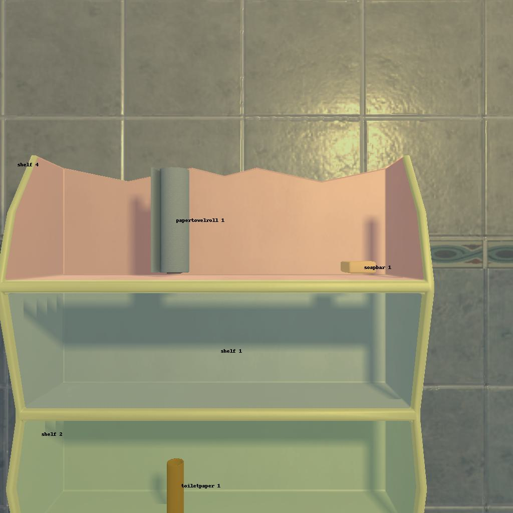

---------------------------------------------------------task: 25---------------------------------------------------------
--------------------------------------------------------------------------------------------------------------------------------------------------------------------
--------------------------------------------------------------------------------------------------------------------------------------------------------------------
Step:--------------------------------------------------------------------------10-------------------------------------------------------------------------------
----------------------------------------
VLM Prompt:
Image1:
**Instruction**
1. Analyze the provided image to identify all visible household objects, focusing on those relevant to the task description "put two dishsponge in cart."
2. Use the analysis of the image and the task hint "The agent must find an object of the desired type, pick it up, find the correct location to place it, put it down there, then look for another object of the desired type, pick it up, return to previous location, and put it down there with the other object." to answer the question: what is the most reasonable action in the choices for the task description "put two dishsponge in cart"?
4. Decide and write the answer using the template: The answer is: (i): , where i is the real number. If there is no desired object in the image, search every place based on **Initial Observation** to find the object. And if no one is exactly correct, choose a similar answer.
**Initial Observation**
You are in the middle of a room. Looking quickly around you, you can see bathtub (1), bathtubbasin (1), cart (1), toilet (1), garbagecan (1), toiletpaperhanger (1), shelf (1-4), sink (1), sinkbasin (1), handtowelholder (1)
**Answer Choices**
(1): go to bathtub 1
(2): go to bathtubbasin 1
(3): go to cart 1
(4): go to toilet 1
(5): go to garbagecan 1
(6): go to toiletpaperhanger 1
(7): go to shelf 2
(8): go to sink 1
(9): go to sinkbasin 1
(10): go to handtowelholder 1
(11): take papertowelroll 1 from shelf 4
(12): take toiletpaper 1 from shelf 4
(13): take soapbar 1 from shelf 4
(14): examine shelf 4
**Answer**
Let's think step by step by following the instructions.
----------------------------------------
----------------------------------------
Original Response:
The task is to put two dishsponges in a cart. Analyzing the image, we see several objects, but none of them are dishsponges. According to the initial observation, there are several locations in the room to search for the desired object.
The most reasonable action would be to search every place that could potentially have a dishsponge. Since we don't see any dishsponges on the visible shelves, we should check other locations. The cart is the final destination for the dishsponges, so we don't need to go there yet. The bathtub, bathtubbasin, toilet, garbagecan, toiletpaperhanger, sink, sinkbasin, and handtowelholder are not typical places to find a dishsponge. However, the shelves are likely places to store a dishsponge.
Since the image shows shelf 4 and there is no dishsponge there, we can eliminate that option. We need to check the other shelves that are not visible in the image.
The answer is: (7): go to shelf 2.
----------------------------------------
----------------------------------------
>>> Refine Original VLM Response and Get Pure Action: go to shelf 2
----------------------------------------
-----------------------------------------------------------------
Running time: 9.028766870498657 seconds
Total Money: 9.089230000000006
-----------------------------------------------------------------
-----------------------------------------------------------------
Text Observation:You arrive at loc 7. On the shelf 2, you see a papertowelroll 1, a toiletpaper 1, and a soapbar 1.
-----------------------------------------------------------------
UNSUCCEED